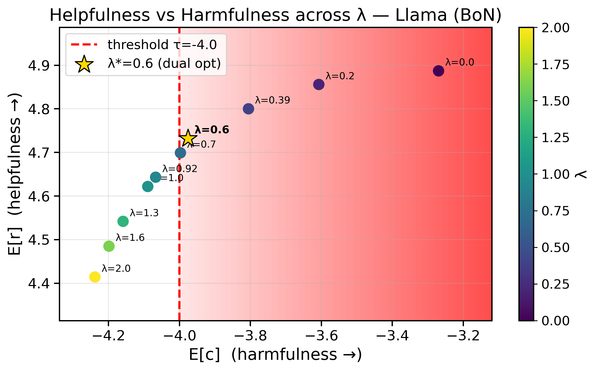
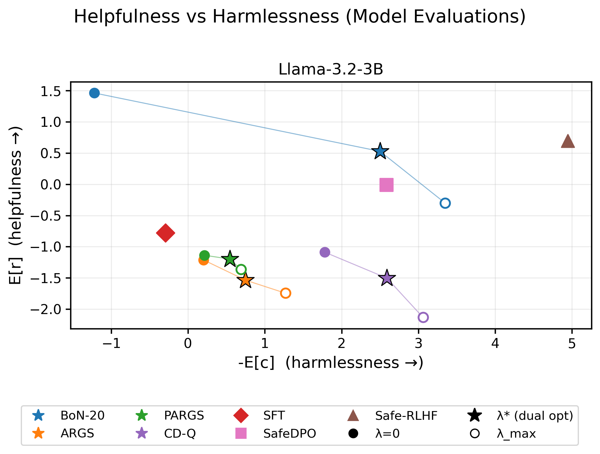
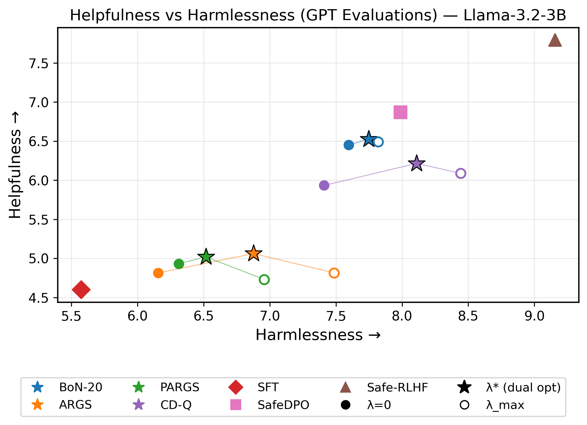

One number makes any decoder safety-aware. LARA finds the multiplier λ★ that trades helpfulness reward against harmfulness cost exactly at your safety budget. It calibrates in minutes on a small prompt set and plugs into Best-of-N, ARGS, PARGS or CD-Q, with no weight updates.
The problem
Inference-time methods steer a frozen model while it decodes, which avoids expensive finetuning. But they expect one scalar score. When helpfulness and safety conflict, someone has to pick the weight between them by hand, and nothing guarantees that weight meets a safety requirement.
Inference-time alignment steers a frozen language model during decoding using auxiliary reward signals, avoiding the cost of repeated weight updates. However, existing inference-time alignment methods typically optimize a single scalar score, so explicit safety constraints must either be ignored or encoded through manually tuned penalties. We propose Lagrangian Reward Augmentation (LARA), a general inference-time alignment framework under safety constraints. Starting from a KL-regularized constrained objective with a reward model and a cost model, LARA dualizes the constraint and reduces the optimization problem to a one-dimensional convex problem over a nonnegative dual variable. Estimated on a small calibration set, this dual variable defines an augmented reward that can be used as a drop-in scoring signal within existing inference-time alignment methods. For sequence-level sampling methods, such as Best-of-N reranking, the calibrated dual variable corresponds to the solution of the expected-cost constrained problem. For token-level reward-guided decoding methods, the same construction yields a principled dual-calibrated heuristic rather than an exact constrained-policy guarantee. We evaluate LARA on both sequence-level and token-level inference-time alignment methods, and find that LARA improves the helpfulness-harmlessness tradeoff, with Best-of-N achieving the best performance among inference-time methods, approaching finetuning-based direct alignment baselines.
Pick w by trial and error. Too small, and responses exceed the harm budget. Too large, and helpfulness drops for no gain in safety. Retune whenever the model or the budget changes.
State the safety budget τ directly. LARA solves for the smallest penalty that meets it. λ★ is the shadow price of harm.
How it works
We start from the same KL-regularized, cost-constrained objective that Safe RLHF solves with RL. After dualizing the constraint, the search over policies collapses to a search over a single nonnegative number.
Draw responses from the frozen reference model on a small calibration set. Score each one with the reward model r and the cost model c.
The dual's slope, τ − 𝔼[c], is monotone in λ, so binary search finds the root. For a safety margin we take the 97.5th percentile over 10,000 bootstrap resamples, which takes about 2 minutes.
Give r − λ★c to Best-of-N, ARGS, PARGS or CD-Q in place of their usual reward. The decoder itself does not change.
Try it
Each position below is a real calibration run for Llama-3.2-3B with Best-of-20. Lower cost means safer. The paper's main setting is τ = −4.
Source: paper appendix, τ sweep table. The shaded region is over budget.
Result 1 · Constraint satisfaction
We sweep λ and rerank with r − λc. For any λ below λ★, expected cost exceeds τ. Any larger value still meets the budget, but gives up helpfulness for no reason. The calibrated value sits at the boundary, as the theory predicts. The same pattern holds for Llama-3.1-8B.

Result 2 · Against baselines
We compare LARA-guided decoding with finetuned baselines (SFT, SafeDPO, Safe-RLHF) and with the same decoders at λ = 0 (no safety penalty) and at λmax = 2 (over-penalized). The evaluation uses 1,024 BeaverTails test prompts. Up and to the right is better.


Best-of-N with λ★ is the strongest inference-time method. Under the gold models it is more helpful than SafeDPO and about as harmless, with no weight updates. At λ = 0 its responses are highly harmful, and at λmax it loses helpfulness for little safety gain.
Among token-level methods, CD-Q comes out ahead. It trains a prefix value function, whereas ARGS scores prefixes with a full-sequence reward model and PARGS assumes each prefix inherits its full response's label. ARGS and PARGS fall below SFT on helpfulness.
Safe-RLHF still has the best overall tradeoff. It pays for that with full RL training. LARA gets most of the way there using a 2-minute calibration.
GPT-4o-mini tends to merge helpfulness and harmlessness into one score. Its two ratings correlate at 0.73, against 0.13 for the gold models. That explains why Best-of-N looks flat across λ under GPT. For judging constraint satisfaction, use the gold models, which score the two axes independently.
Citation
@inproceedings{chittepu2026lara,
title = {Safe Inference-Time Alignment via Lagrangian Reward Augmentation},
author = {Chittepu, Yaswanth and Joshi, Ativ and Chintala, Sohini and Niekum, Scott},
booktitle = {Conference on Language Modeling (COLM)},
year = {2026}
}